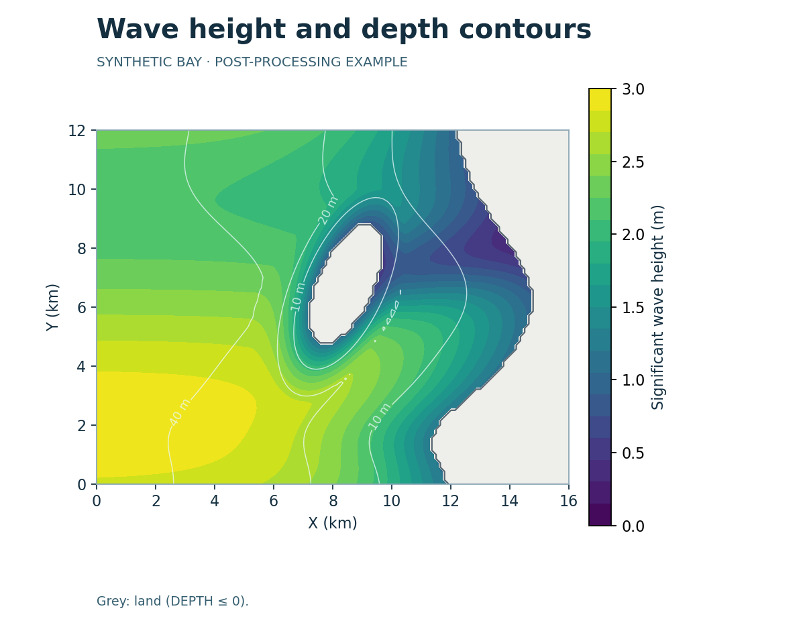

PAKET PYTHON SUMBER TERBUKA · V0.1
NefisReader
Baca keluaran NEFIS Delft3D 4 dan konversikan ke NetCDF. Tersedia perintah d3dnefis, API Python, dan server MCP opsional.
CONTOH INTERAKTIF
Jelajahi WAVE 2D dan FLOW 3D.
Pilih medan gelombang atau lapisan kecepatan. Nilai ini diekspor dengan NefisReader dari contoh sintetis di repositori.
Tinggi gelombang signifikan
Memuat contoh…
Data sintetis, bukan pengamatan atau hasil tesis.
Penjelajah menampilkan irisan yang sudah dihitung. Paket yang terpasang membaca dan mengonversi pasangan .dat/.def milik Anda. Halaman ini tidak menerima unggahan.
CONTOH PASCAPROSES
Dari NetCDF ke peta.
NefisReader mengekspor medan, lalu skrip Python menggabungkannya menjadi peta. Kedua contoh memakai teluk sintetis yang sama, bukan hasil simulasi atau data Callao. Label gambar berbahasa Inggris.

Batimetri dan fluks energi
Latar: DEPTH dalam meter. Panah: TRANSP_X dan TRANSP_Y dalam kW/m, hanya di atas air.


Tinggi gelombang signifikan dan kontur kedalaman
Warna: HSIGN dalam meter. Garis: kontur kedalaman. Abu-abu menandai daratan pada contoh sintetis.
INSTALASI
Instal paket dan baca keluaran model Anda.
Linux x86-64, Python 3.9+, dan akses internet untuk menginstal dependensi. Unduh paket dan jalankan perintah berikut dari folder unduhan. Anda tidak perlu memasang Delft3D.
tar -xzf NefisReader-main.tar.gz
cd NefisReader-main
python3 -m venv .venv
source .venv/bin/activate
bash scripts/install.sh
d3dnefis examples/data
python examples/leer_mallas.py \
examples/data/NETCDF_EXPORT/wavm-demo-2d.nc \
examples/data/NETCDF_EXPORT/trim-demo-3d.ncSudah memiliki berkas?
Berikan berkas .dat atau folder keluaran kepada d3dnefis. Gunakan --inventory untuk melihat daftar variabel tanpa konversi.
Hubungkan agen Anda melalui MCP
Server lokal menampilkan daftar variabel dan membaca irisan NEFIS atau NetCDF dalam folder yang diizinkan. Memerlukan Python 3.10+.
Panduan MCP untuk Codex dan klien lainKREDIT DAN CAKUPAN
Perangkat lunak sumber terbuka.
NefisReader adalah proyek independen. Ini bukan produk resmi dan tidak mewakili dukungan Deltares.
Deltares mengembangkan pustaka NEFIS. Arsip kode sumber, pemberitahuan, dan petunjuk kompilasi didistribusikan terpisah di dalam repositori. Contoh bersifat sintetis dan tidak memuat data tesis.
Kode proyek ini menggunakan lisensi MIT. Pustaka NEFIS dari Deltares tetap mengikuti pemberitahuan dan lisensinya sendiri.
Apakah NefisReader bermanfaat?
Masuk ke GitHub lalu klik Star untuk menandai repositori dan mendukung proyek ini.
Jika ingin mendukung proyek dengan donasi sukarela, hubungi saya!
Tautan membuka isu publik di GitHub. Jangan bagikan informasi pembayaran di sana.